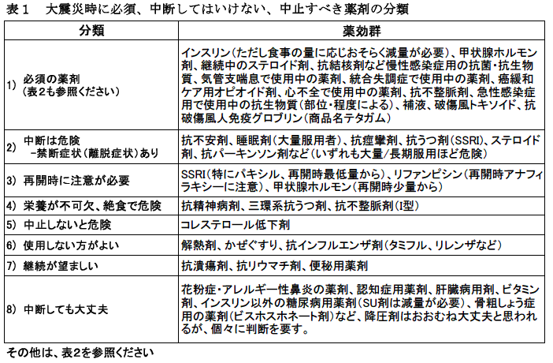
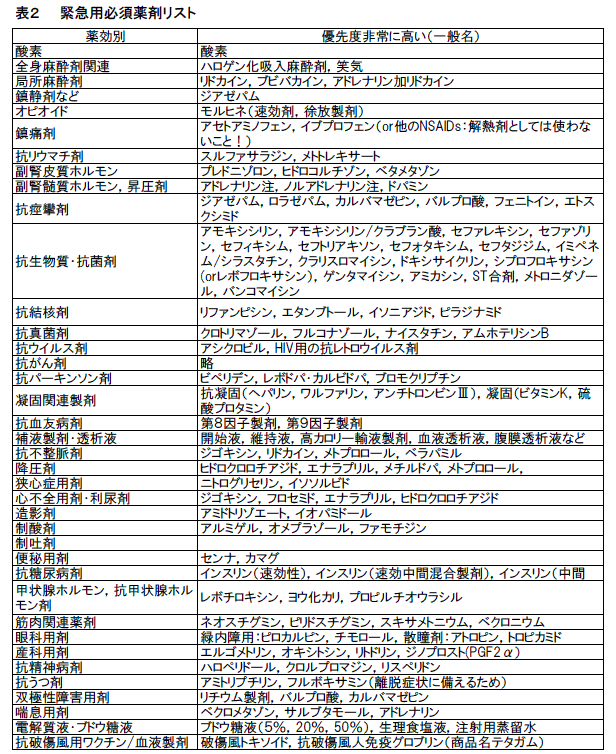

3月11日、マグニチュード9.0の巨大地震が東北関東地方を襲った。死亡者・行方不明者合計は2万を超え、30万を超える人が避難生活を余儀なくされている（3月22日現在）。
この時期、水道、電気、ガスなどのライフライン、食糧や衣類の不足に加え、療養中あるいは、新たに発病した人にとって、医薬品の不足が問題となっている。
NPO法人医薬ビジランスセンター(薬のチェック)では、この危機的な時期における薬物療法の在り方が重要だと考え、一般向けに情報を発信した。その情報を、今回は、医師・薬剤師向けにして提供する（TIP誌2011年3月号掲載予定分を事前に公表する）。
なお、この情報は災害時だけでなく薬剤が中断した際に注意すべき情報としても活用いただけると考える。多くの人に利用いただければと願いつつ（ご意見はこちらまで）。
薬物療法の基本は、必要な薬剤の継続であるが、非常時においては、急を要しない薬剤、中止可能な薬剤の区別が必要と考える。また、この時期には中止しないと危険な薬剤がある。薬剤が流され、何日か服用できず離脱症状を起こす可能性のある薬剤（睡眠剤、安定剤、抗うつ剤、抗痙攣剤、ステロイド剤、抗パーキンソン剤）、食糧不足のために薬剤を服用していなくても血中濃度が上昇しうる危険な薬剤もある（抗精神病剤など）。さらには、急場にどうしても必要があって一時的に使用したとしても、安定剤や睡眠剤など依存に陥る可能性のある薬剤は、不要になればできる限り早く離脱を考える必要がある。一時中断後、再開に際して、特に注意を要する薬剤もある（抗うつ剤、リファンピシン、甲状腺ホルモンなど）。これらの薬剤を区別しておくことがとりわけ重要であろう。
報道で奇異に感じたのは、被災地の医師や看護師らが、インタビューに応じて、降圧剤やコレステロール低下剤などが不足しているので、脳卒中が心配などとコメントしていたことである。
大災害の時には、危機的な状況を乗りきるために必要な臓器、特に筋肉や脳の血流を増加させるために、アドレナリンを出し血圧を上昇させる。また、ストレスに耐えるために必要なコルチコステロイドの合成の原料となるコレステロールを増加させる必要がある。
しかし、食糧不足で、多くの被災者は十分に栄養が取れない状態になっている。食事中のコレステロールが減少し、エネルギー源そのものが減少するため、コレステロール合成の原料であるアセチルCoAも減少している。その状態でコレステロール低下剤（スタチン剤）が使われると、メバロン酸の合成が減少し、ファネシル-2リン酸が減少し、コレステロールだけでなく、コエンザイムQ（ユビキノン）や、ドリコールの合成も減少する。これら生命活動に必須の物質が減少すると、免疫機能が低下し、危険である[1a]。
筆者が以前相談を受けた中に、骨折で入院した後食事が取れなくなっていたのにコレステロール低下剤が続けられ手術後、コレステロール値が30台に低下して死亡した60代の女性がいた。手術を受けた際には溶血性貧血が起きて、元々あったヘモグロビン値（12.4g/dL）が4.0 g/dLに減少していた。ショック状態となり一時心停止まで起きたが、手術翌日にはコレステロール値が68 mg/dL、その翌日には36mg/dLとなり死亡したものである（未公表、鑑定意見書）。
大震災で低栄養の人では、こうした状態になる危険がありうる。
ここまで極端でなくとも、コレステロールの低下で感染症が悪化しやすくなり[1b]、神経障害や横紋筋融解症など、重大な害を生じる危険がある[1a,c,d]。したがって、コレステロール低下剤は、使用を継続するより、逆に中止する必要があると考える。
コレステロール低下剤で下がりすぎて急に激烈な症状が起きることはあっても、中止によって、その反動で何か病気が急激に悪化するということはない。仮に服用していて利益があるような人がいるとしても、その効果は長期的なものであり、一時的な中止によって生じる害は、ほとんど無視しうるとみてよいであろう。
危機的な状況では、先にも述べたように、筋肉、脳、心臓などの血流を増加させるため、アドレナリンを出して血圧を上昇させている。必要があって上昇している血圧を下げると、重要な臓器に血液が不足してしまうことになりかねない。一時的に高くなっても、事態が落ち着いてくれば、自然と血圧はさがってくる。降圧剤によって無理に血圧を下げると、かえって不都合が生じることになりかねない[2a,b,c]。
特に、ARBは、炎症反応・免疫を低下させるため、感染症を多発しやすい[2d]。カルシウム拮抗剤も同様である。免疫細胞にもカルシウム・チャンネルがあるため、これが抑制されると免疫が抑制されうる。
したがって、栄養不足により感染症に弱くなる被災地では、ARBやカルシウム拮抗剤は、むしろ控える必要があると考える。
ただし、大動脈瘤や心筋梗塞を起こしたことのある人など、合併症のある人には降圧剤は欠かせない場合があるため、個別に考える必要がある。
今回の大震災の被災地は寒冷地である。今年のインフルエンザの流行は、ほぼ終了しつつあり、これは幸いであった。一部の地域でB型インフルエンザが最流行し始めているとの情報もあるが、国立感染症研究所感染症情報センターの病原微生物検出情報（IASR）の最新情報[3a]（第10週分：3月14日〜3月20日）によれば、先週より報告数が増加した都道府県はない。したがって、ほとんど終息していくと考えてよいと思われる。また仮に、流行が再開したとしても、インフルエンザワクチンは無効である。
ただ、インフルエンザでなくとも、かぜには罹りやすくなると思われる。栄養不足のために、かぜであっても重症化しやすくなる可能性がある。特に、幼児や高齢者では、重症化しやすく要注意である。
このような状況のもとで、解熱剤、特に非ステロイド抗炎症剤（NSAIDs）系解熱剤や、感冒用薬剤を用いると、感染症がより重症化して、死亡率を高めることになる[3b〜g]。発熱は、ウイルス攻撃のために上昇しており、NSAIDs解熱剤は炎症を抑制し免疫を抑制するためである。
体を温めて、熱が自然に下がってくるのを待つのが最も基本である。ウイルスが熱で抑制されれば、熱は自然に下がってくる。特に、乳幼児や高齢者には、解熱剤は禁物である。アセトアミノフェンも大量使用して解熱しすぎると、重症感染症が悪化し死亡率が高まる[3h]。使わないのがよい。
インフルエンザで高熱になり、受診する頃には、ふつうウイルスはすでに減り始めている[4a]。インフルエンザで怖いと恐れられているのは、重症化して脳症や肺炎を合併することだが、タミフルもその他の抗インフルエンザ剤も、脳症や肺炎など重症化を予防するとの根拠はない[4b-e]。
タミフルは突然死や異常行動の危険性が高くなる。インフルエンザで高熱時、タミフルが脳内に入り中枢を抑制するためである。最近、タミフルによる意識障害やせん妄との関連を示す疫学調査結果が公表された[4f]ので、それについて解説した[4g]。この報告は、タミフルの販売元である中外製薬から寄付金の提供を受けていた研究者らが報告したものである[4f,h]。
タミフルを使うと異常な低体温になることがある。ウイルス排除のために出ている高熱を薬剤で解熱させると治癒が遅延する。タミフルの使用でインフルエンザウイルスに対する抗体産生が低下するとの実験結果も報告されている[4i]。
タミフルをはじめ抗インフルエンザウイルス剤は、普段でも必要がない。そのうえ、栄養のよくない状態で重症化した場合には、その毒性がよけいに出やすくなると考えられ、被災者の皆さんは、使わない方がよい。むしろ使ってはいけないと考えます。
トリアゾラム（ハルシオン）とブロチゾラム（商品名ブロチゾラム）をそれぞれ常用量の２倍ずつ（合計常用量の４倍）使用していた人が、１日中断しただけで、その翌朝、痙攣や筋硬直から意識消失し、悪性症候群あるいはカタトニアに相当する状態に陥った例が報告されている[5]（禁断症状（離脱症状）として生じたと考えられている）。超短時間作用型の睡眠剤は、ゾルピデム（マイスリー）も含めて、おそらく、常用量の３倍以上も服用している人が１〜２日中断するだけでも、同じような状態に陥る危険性があると考えられる。
したがって、大量を常用している人の完全中断は危険である。中止する場合は、少しずつ減量をしていって、最終的に中止にもっていかなければならない。
しかし、津波で薬もすべて流されてしまったという人は少なくないと思われる。そのため、震災の日もいつも飲んでいた薬がなくて困ったという方は多いはず。とくに睡眠剤を常用していた人は、震災の不安に加えて睡眠剤がないことによる離脱症状に悩まされたことは想像に難くない。
翌日から２〜３日後に、原因不明の痙攣や筋硬直、あるいは意識消失を起こした人については、この可能性を検討する必要がある。
しかし、常用量程度を使用していた人なら、中断しても特別な不都合はないかもしれない。１週間以上中断していてなんとか乗り切った人は、それ以上症状が強くなることはないはずであり、この機会に中止できるかもしれない。
抗痙攣剤の多くは抗不安剤や睡眠剤と同様の作用があり、中断で離脱症状が生じうる。しかも、痙攣抑制目的では、抗不安剤として用いるより相対的に大量を長期に用いている。したがって、中断すると、元々の痙攣の出現に加えて、離脱症状としての痙攣も生じうる。血中濃度の低下にしたがって、痙攣が生じうるが、超短時間作用型の睡眠剤よりは半減期が長いものが多いため、離脱反応としての痙攣は中止翌日というよりは、数日後に生じうるであろう。場合によって痙攣重積状態に陥る可能性があるので、適切な対処が求められる。離脱反応の予防には、もともと服用していた薬剤がもちろんよいが、なければ、大発作型痙攣で用いられていた薬剤なら、いずれのベンゾジアゼピン系薬剤でも代替可能である。
抗パーキンソン剤は、抗コリン剤もドパミン作動剤も、筋固縮を軽減する。睡眠剤や抗痙攣剤のように依存はない（抗コリン剤）か、明瞭ではない（ドパミン系薬剤）が、中止により症状が悪化し、筋固縮が強くなり、場合によっては悪性症候群を生じうる。
離脱反応の治療にも、元の薬剤が最適であるが、同じ薬剤が得られない場合には、とりあえず悪性症候群を防止するために、ベンゾジアゼピン剤を用いて症状の軽減をはかる必要がある。ベンゾジアゼピン剤なら、どの薬剤でもよい。固縮が強い場合は静注が必要だが、固縮がなだあまりなく、経口可能なら経口剤でも十分効果がある。
抗痙攣剤や抗パーキンソン剤は、一時的に中断したとしても、できる限り早期に再開できるよう配慮が必要である。
（なお、脱稿後、社団法人日本てんかん協会（波の会）JEA(Japanese Epilepsy Association)から情報に提供がありましたので、巻末にリンクを追加します）。
一方、被災者の中には、不安や寒さで不眠となる人がいる。報道されている様子を見ると、睡眠剤が結構処方されているように見受ける。医療に携わる者としては、どうしても不安を取り除いてあげたいと思う気持ちから処方がなされていると思われる。
しかし、これら睡眠剤や抗不安剤、抗うつ剤は依存症を起こす危険性を持っているので注意が必要である。被災による不安があったとしても、安易な使用開始は、極力避けるべきと考える。抗不安剤・睡眠剤は、免疫を抑制し、感染症も起こしやすくなる。また、睡眠剤の使用でうつ病罹患が２倍になることも知られている[6a]。
仮に一時的に使用が必要な場合でも、注意すべきは、急激な増量になっている場合である。常用量上限の数倍を超えてくると歯止めがかかり難くなり、一気に常用量上限の10倍を超えてしまうことがある。そうなると攻撃的になり、犯罪行為に及ぶ危険性がある[6b]。
したがって、増量にならないよう、ある程度落ち着けば、できるだけ早期に中止する努力・注意の喚起を怠らないようにという注意が、医療を提供する側には求められる。
また大切な人を失った悲嘆に抗うつ剤や抗不安剤を使ってはならない[6c]。
SSRI（選択的セロトニン再取り込み阻害剤）系の抗うつ剤、とりわけパキシルは、血中濃度の上昇と低下が著しいため、使用していた人が中断すると、一気に血中濃度が低下して、離脱症状が出やすくなる。離脱症状の中でも、攻撃性が高まって暴力行為や他害行為、犯罪行為に進む可能性がある[7a,b]。中断して１週間以内が最も起こしやすいが、その後も起こす。
また、中断後に使用を再開するにしても、もともと用いていた量でいきなり再開するとたいへん危険である。この場合も、同様に攻撃性が高まり、暴力行為や他害行為、犯罪行為に進む可能性がある[7a,b]。
再開するにしても、最低量から始め、徐々に増量していかなければならない。また、再開によって自殺の危険性も高まり、中断でうつ状態が激しくなることもある[7a,b]。
中断していて、それほど問題にならなかった人は、この機会に中止を試みてみるのもよいかもしれない。
統合失調症のほとんどの人は、ブチロフェノン系（ハロペリドール、ブロムペリドールなど）やフェノチアジン系（クロルプロマジン、レボメプロマジンなど）、あるいは非定型抗精神病剤（リスペリドン、オランザピン、クエチアピンなど）を大量服用していることが多い。統合失調症の人は、運動不足と薬剤の性質から、肥満していることが多く、これらの薬剤は脂肪性のために脂肪組織に大量に蓄積されている。
こうした方々が被災して食事が不十分だと、脂肪組織を燃焼してエネルギー源とするため、薬剤が血中に溶出し、抗精神病剤の血中濃度が高まる。そのために致死的な中毒症状がでてくることがある[8a]。これは、薬剤を服用していなくとも起きるため、起きるとの認識がなければ見逃されやすい。
統合失調症の人が手術で麻酔をかけ、絶食状態が続くと突然死する現象は、麻酔医にはいわば常識になっていることであり、それと同様の現象と考えられる[8a]。
致死性不整脈が最も激しい中毒症状である。心室頻拍やTorsades de pointesタイプの不整脈、あるいは心室細動を生じて、いずれも突然死の原因になる[8a]。
悪性症候群が、次に激しい症状である。筋肉の硬直が起きて発熱する[10]。発熱して肺炎を合併することもあるが、肺炎と間違われることがあり、実際に呼吸ができなくなるので、肺炎も起こす[11]。しかし、いくら抗生物質だけを用いても治まらない。おまけに、先述の睡眠剤や抗不安剤も服用していることが多いので、その禁断症状も加わるために、よけいに筋肉は硬直して発熱することになる[5]。この場合には、ベンゾジアゼピン系の薬剤（ジアゼパム：商品名ではセルシンやホリゾンなど）が効果がある[5]。
カタトニアは、発熱しない程度に体が硬直する状態をいう。統合失調症そのものでも起きるが、圧倒的に、統合失調症用の抗精神病剤の過剰で起きやすい。
こうした危険な状態の防止には、絶食をさけることが最も大切である。精神疾患の専門病院の患者さんが多数死亡されたことが問題になったが、食事を提供されなかったために、ここで述べたことが現実に起きて突然死された、という可能性も否定できないのではないか。
三環系抗うつ剤を大量に使用している場合も同様の危険性がありえます。程度は少ないとはいえ、抗不整脈剤（I型）も抗精神病剤と基本的には同じ性質のものですから、注意が必要です。
ステロイド剤（コルチコステロイド剤）は、急激な中断で、離脱反応として、さまざまな不都合が生じる[9a-d]。吸入ステロイド剤、なかでもフルタイド（フルチカゾン）やアドエア（フルチカゾンと長時間作用型β作動剤サルメテロールとの合剤）も例外ではない[9b-d]。長期のステロイド療法で、患者自身の副腎が必要に応じてステロイドホルモンを産生でなくなっているからである。吸入ステロイド剤でも、フルチカゾンは脂溶性が高く、生物学的半減期が極めて長く蓄積するため副腎抑制を生じやすい[9c,d]。
内服ステロイド剤の中断で、最も短時間で起きる激しい症状は、３〜４日から数日で生じるショック、意識消失である。血圧が低下し、低血糖のため、昏睡、痙攣を生じ、致命的である。
フルチカゾン含有吸入製剤の中断の場合には、これよりも、遅れて離脱症状が生じると考えられる。しかし、起きる症状は同様と考えられる。文献報告では、いつの間にか血圧が下がり、意識がなくなり、痙攣が起きていたが、原因不明とされていることが多かった[9a-d]。
ステロイド剤を中断して1週間程度後には、発熱をはじめ「かぜ」のような症状がでることがある。これも離脱症状の一つである。その後２〜３週間後では、脱力感や倦怠感が起き、もともと喘息はなかった人でも喘息が出ることがある[9a]。２か月から数か月後頃にはリウマチ反応がないけれども関節痛など、まるでリウマチのような症状が生じることがある。この反応は「偽リウマチ」という病名もついている。その後数か月から１年程度にわたり、涙が出にくい、唾液が出ない（シェーグレン症候群のような症状）、なんとなくだるい、など、さまざまな症状が起きるようになる[9a]。
したがって、ステロイド剤を長期に用いていた人では、急な中断は避けなければならない。もしも、原因不明で昏睡やけいれんを生じている場合には、その人がステロイド剤を使用していなかったかどうか、医療従事者は注意を怠らないようにしなければならない。
インスリンが必要な糖尿病患者にとって、インスリンは必須である[10a]。糖尿病患者でインスリンを注射中の人には、命綱ともいうべきインスリンは、確実に届けなければならない。
しかし、被災地で避難している人は、食事の量が少なくなっているはず。その場合は、インスリンの量を減量する必要がある。どの程度減量すべきかについては一概には言えないが、高血糖よりは低血糖の方が危険であるため、思い切って減量した方がよい。
ただ、食事が減って血糖値が下がっているからと、インスリンを完全に中止するのは危険である。代謝状態がぐっと悪化して活動ができなくなる可能性がある。したがって、低血糖症状が起きない程度に、ごく少量（２〜４単位）でもインスリンは補給を続けておく必要がある。
一方、インスリン以外の糖尿病用の薬剤は必ずしも必要ではない。SU剤を使用中の人は、おそらくかなり減量する必要がある。場合によっては、中止しても血糖値はあまり上がらないかもしれない（ただしストレスのために上がることも考えられるので、一概には言えない）。
ピオグリタゾン（商品名アクトス）は、もともと、NPOJJIPでは「使ってはいけない！」に分類していたものである。中止による「害」は何もない。むしろ、栄養が足りないのに続けていると血糖が下がりすぎ、心不全も起こりやすく[10a,b,c]、骨折も増加する[10d.e]。したがって、中止が望ましい。アクトスは最近、ドイツで健康保険の支払い対象から外された[10d,e]。
アカルボース（グルコバイなど）やボグリボース（ベイスンなど）糖分の吸収を抑える薬剤も、ただでさえ食糧不足なので中止すべきである。
グリプチン剤（DPP-4阻害剤）のシタグリプチン（商品名グラクティブ、ジャヌビア）、ビルダグリプチン（エクア）、アログリプチン（ネシーナ）、それにGLP-受容体作動剤であるリラグルチド（ビクトーザ）、エキセナチド（バイエッタ）などは、いずれも2009年12月以降販売が開始された新薬である。「薬のチェックは命のチェック」の暫定的判定では、「使ってはいけない！」である[10f]。
抗結核剤のリファンピシンを一旦中断した場合、それを再開する際には、厳重な注意が必要である。再開に際して、アナフィラキシーを生じ、呼吸困難や血圧の低下でショック状態になる危険性があるからだ。中断の後に再開する場合には、医療機関の中で少量を服用したうえで、アナフィラキシーなど過敏反応を生じないことを確認する必要がある。
甲状腺ホルモン剤は半減期が長く（平均7日）、効果が長く続くので、中断してただちに症状が悪化することはなく、比較的余裕がある。しかし、理論的に考えて、２週間以上も長期にわたって中断していると、低下に伴う影響が出現する可能性がある。
そして、注意が必要であるのは、極めて長期に中断していて甲状腺機能が非常に低下してしまった場合に、甲状腺ホルモンの再開のし方である。元々服用していて良好なコントロールが得られていたのだからと、元々の維持量をそのまま再開すると、激しい過剰症状として動悸や最悪の場合不整脈を生じることになる。特に心不全や何らかの心臓病を合併している場合には特に危険である。そのため、レボチロキシン（１錠25μg）を最低量から（半錠=12.5μg）再開始し、6〜8週間毎に1日12.5〜25μgずつ、不整脈などが生じないかどうかを確認しながら増量する[11]。
骨粗鬆症用として、最近盛んに用いられている新薬（ビスホスホネート剤）は、効果持続時間が長いため、中断により不都合が生じることはない。アレンドロン酸（フォサマック、ボナロンなど）、エチドロン酸（ダイドロネル）、ミノドロン酸（ボノテオ、リカルボン）、リセドロン酸（アクトネル、ベネット）などである。
これらは、骨の吸収を阻害すると同時に、骨の形成をも阻害するため、低栄養状態で継続するのは、むしろ理論的に考えて、危険である可能性がある[12]。
骨粗鬆症については、薬のチェックは命のチェックNo28を参照してください。
ドネペジル（アリセプト）は、アルツハイマー型認知症に用いることが認められている薬剤だが、認知症の進行そのものを防ぐことはできない。一方、害作用も多い[13a,b]。震災という非常事態で、必須のものとは言えないであろう。
肝臓病用剤ウルソデオキシコール酸やビタミン剤なども、有効性の根拠は乏しく、必須のものとはいえない。中止しても特に差し支えはない。食事の適切な供給こそ重要である。
震災によるストレスは、胃潰瘍や、潰瘍性大腸炎、リウマチ性疾患に対して悪化要因として作用する可能性が高い。したがって、それらの疾患で使用中の薬剤は、継続することが望ましい場合が多いであろう。ただし、抗リウマチ剤のエタネルセプトなどでは、やや常用量が高用量に設定されている[14]ため、減量も可能であるかもしれない。
ただ、震災のストレスは、普段とは性質が異なると考えられ。そのため、感じるストレスの程度は、個人によって大いに異なりうるため、個別の対応が必要と思われる。
大震災の被災地では、ストレスのほか、トイレの不備や、食事の変化、集団生活などのために、便秘の頻度は高まると思われる。
したがって、これらの疾患・症状に用いている薬剤は、優先的に届けられなければならない。
災害時には外傷が多いため、破傷風トキソイドが欠かせない。青年期までの人は小児期の予防接種でカバーされていると考えられるが、予防接種後10年以上経過した成人、特に高齢者では免疫が低下している可能性があるため、３回接種したことがある人でも破傷風トキソイド必要である。
なお、接種不明か接種回数が少ない人の外傷には、清潔で軽傷以外には、抗破傷風人免疫グロブリン（商品名テタガム）の併用が必要である[15a,b]。
インスリンは先述したとおり必須。インスリンが中断されると、糖尿病が急速に悪化する人が確実にいるので、優先的な確保が必要な薬剤である。
そのほか、必須の薬剤としては、抗結核剤など慢性感染症用の抗菌・抗生物質、気管支喘息で使用中の薬剤、癌緩和ケア用のオピオイド剤、心不全で使用中の薬剤、抗不整脈剤、抗パーキンソン剤などの中止は危険である。最優先で届けられなければならない。
急性感染症用で使用中の抗生物質は、部位や程度によるが、本格的な感染症には、当然ながら必須である。また、補液製剤はいかなる状況でも必須。被災地では特に必要とされる状況が多い。
表1にまとめを示し、表2にその他必須の薬剤をあげておく。表２は、WHOのessential medicine model list を参考に、薬のチェックは命のチェックとしての評価も交え、この時期に必須と考える薬剤をリストアップしたものである。緊急にまとめたので、不十分な点はあるかもしれないが、必要に応じて改訂を加えたい。
 なお、No142とNo143のまとめに際しては、「薬のチェックは命のチェック」誌およびTIP誌編集関係者から多くの助言をいただきました。
本稿は、とりあえず気づいたことを記したもので、裏付けの文献は、当センターでこれまで発してきたものが中心である（20110322記）。不足していること、気づいたこと、ご意見、ご感想をこちらにお寄せください。